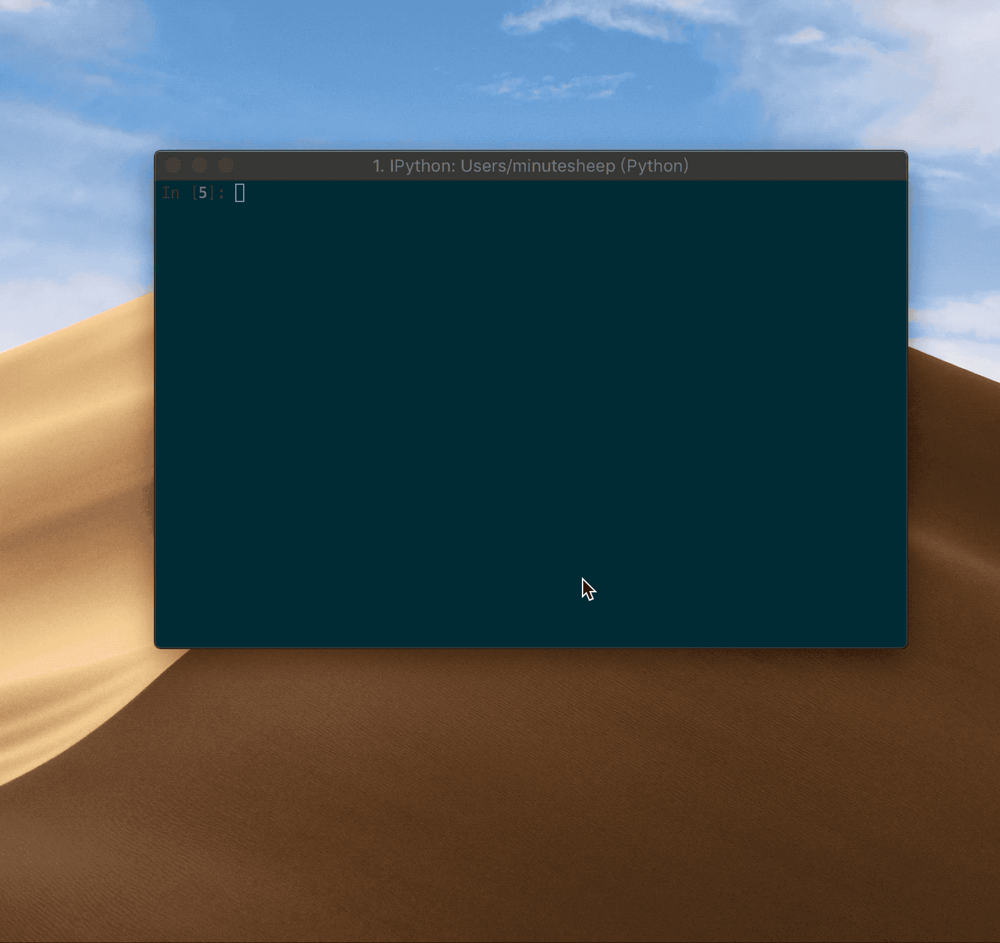
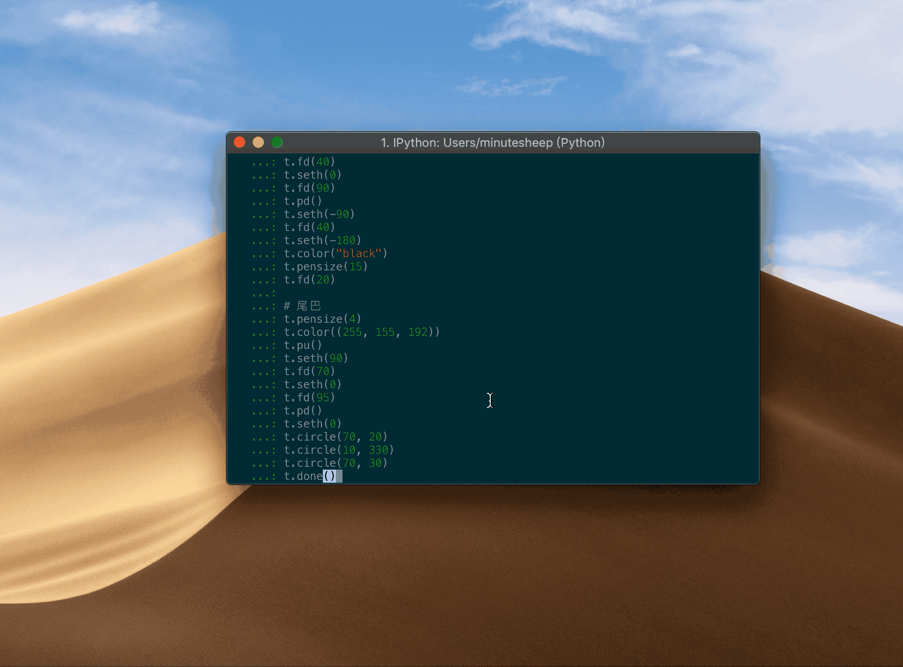

#18 turtle模块
这一节继续记录模块，本节将记录Python中一个非常重要的画图模块——turtle，Here we go！
一、turtle模块
turtle（海龟）模块是Python中强大的内置画图模块，可以模拟真实的画图环境以及画图步骤来画图。通常，我们画图需要两种工具，一个是画布，另一个是画笔；在turtle中，同样需要这两种工具，首先来学习画布的设置
画布
画布无非不过设置画布大小、背景颜色、画布在桌面的位置，turtle模块中，有两种画布的设置方法，需要时可将它们结合起来使用：
turtle.screensize(canvwidth=400, canvheight=300, bg=None) 「canvwidth表示画布宽、canvheight表示画布高、bg表示背景颜色」
1 | In [19]: import turtle # 导入turtle模块 |
turtle.setup(width=0.5, height=0.75, startx=None, starty=None) 「width表示画布宽、height表示画布高、startx表示画布在桌面上的坐标x位置、starty表示画布在桌面上的坐标y位置」
1 | In [26]: import turtle |
如果要给有背景色的画布设置初始位置，则可以将上述两种方法结合起来使用：
1 | In [34]: import turtle |
画笔
说完了画布设置，就剩下画笔了，画笔这一部分有些复杂，因为不仅要设置画笔的粗细颜色等，还要给画笔前进后退旋转等动作
#####画笔设置 turtle.pensize(width=None) 「width表示画笔的宽度」 1
In [39]: turtle.pensize(20) # 设置画笔的宽度为20像素
turtle.pencolor(*args) 「可以传入多种参数，例如直接传入颜色‘green’，也可以传入RGB配色0.2，0.8，0.55」 1
2
3In [42]: turtle.pencolor('green') # 设置画笔颜色为绿色，直接传入颜色
In [43]: turtle.pencolor(0.2, 0.8, 0.55) # 传入RGB配色
turtle.speed(speed=None) 「speed代表画笔速度」 1
In [45]: turtle.speed(5) # 设置画笔速度为5
画笔动作
turtle.forward(distance) / turtle.fd(distance) 「画笔前进，distance代表距离」
turtle.backward(distance) / turtle.bk(distance) 「画笔后退，distance代表距离」
1 | In [50]: turtle.fd(200) # 画笔前进200像素 |
turtle.seth(degree) 「画笔运动的方向，degree代表角度」
1 | In [77]: turtle.seth(90) # 画笔运动方向为90度正方向 |
turtle.left(degree) 「画笔逆时针旋转，degree代表角度」
turtle.right(degree) 「画笔顺时针旋转，degree代表角度」 1
2
3In [52]: turtle.left(90) # 画笔逆时针旋转90度
In [54]: turtle.right(90) # 画笔顺时针旋转90度
turtle.goto(x,y) 「将画笔移动到坐标（x，y）处」 1
2
3In [55]: turtle.goto(300,300) # 将画笔移动到坐标（300，300）处
# 注意：假如画笔现在的位置为（10，10），使用上条命令后，画笔移动到（300，300）处，这时候会在画布上留下一条（10，10）到（300，300）的线段
turtle.penup() 「提起画笔」 1
2
3In [56]: turtle.penup() # 将画笔提起
# 这时候使用前进后退或者goto方法都不会在画布上留下痕迹
trutle.pendown() 「落下画笔」 1
2
3In [57]: turtle.pendown() # 落下画笔
# 之后使用前进后退或goto方法会在画布上留下痕迹
turtle.circle(radius, extent=None, steps=None) 「画圆方法，radius表示半径、extent表示圆的角度、steps表示圆内切多边形的边数」 1
2
3
4
5In [59]: turtle.circle(50) # 画一个半径为50像素的圆
In [60]: turtle.circle(60,180) # 画一个半径为60像素的半圆
In [61]: turtle.circle(70,steps=6) # 画一个内切于半径为70像素圆的6变形，注意：这是一个多边形，不是圆
turtle.hideturtle() 「隐藏画笔箭头」
turtle.showturtle() 「显示画笔箭头」 1
2
3
4
5In [62]: turtle.hideturtle() # 隐藏画笔箭头
In [63]: turtle.showturtle() # 显示画笔箭头
# turtle模块默认箭头时显示的，可以将其隐藏
turtle.isvisile() 「返回画笔箭头是否存在的结果」 1
2
3
4
5
6
7In [71]: turtle.isvisible() # 返回True，说明画笔箭头可见
Out[71]: True
In [72]: turtle.hideturtle()
In [73]: turtle.isvisible() # 返回False，说明画笔箭头不可见
Out[73]: False
turtle.fillcolor(*args) 「填充颜色设置，可以直接传入颜色，也可以传入RGB参数」
1 | In [65]: turtle.fillcolor('yellow') # 设置填充颜色为黄色 |
turtle.begin_fill() 「开始填充图形」
turtle.end_fill() 「结束填充」
1 | In [66]: turtle.begin_fill() # 准备开始填充图形 |
turtle.flling() 「返回当前图形是否在填充的结果」 1
2
3
4
5
6
7In [68]: turtle.filling() # 返回False，说明当前图形不在填充
Out[68]: False
In [69]: turtle.begin_fill()
In [70]: turtle.filling() # 返回True，说明当前图形正在填充
Out[70]: True
turtle.undo() 「撤销上一个画笔动作」 1
In [74]: turtle.undo() # 撤销上一个画笔动作
turtle.clear() 「清空画布，但保留当前画笔状态和位置」 1
In [75]: turtle.clear() # 清空画布，保留画笔状态和位置
turtle.reset() 「清空画布，画笔不再保留原有状态和位置」 1
2
3In [76]: turtle.reset() # 清空画布，不会保留画笔状态和位置
# 注意：画布属性没有被重置，依然保留原画布大小、背景色和画布位置
turtle.write(s[,font=("font-name",font_size,"font_type")])) 「画笔写字，s代表要写的字符串、font-name代表字体名称、font-size代表字体大小、font-type代表字体类型」
1 | In [78]: turtle.write('MinuteSheep') # 写下MinuteSheep |
turtle.done() 「完成画作」 1
2
3In [79]: turtle.done() # 完成画作
# 此时可以点击图画上的x号关闭图画了
示例
示例一：太阳花 「来自官网」 1
2
3
4
5
6
7
8
9
10from turtle import *
color('red', 'yellow') # 画笔颜色为red，填充颜色为yellow
begin_fill() # 开始填充
while True:
forward(200)
left(170)
if abs(pos()) < 1:
break
end_fill()
done()
效果如图：

示例二：小猪佩奇 「来自：https://www.cnblogs.com/nowgood/p/turtle.html#_nav_11」 1
2
3
4
5
6
7
8
9
10
11
12
13
14
15
16
17
18
19
20
21
22
23
24
25
26
27
28
29
30
31
32
33
34
35
36
37
38
39
40
41
42
43
44
45
46
47
48
49
50
51
52
53
54
55
56
57
58
59
60
61
62
63
64
65
66
67
68
69
70
71
72
73
74
75
76
77
78
79
80
81
82
83
84
85
86
87
88
89
90
91
92
93
94
95
96
97
98
99
100
101
102
103
104
105
106
107
108
109
110
111
112
113
114
115
116
117
118
119
120
121
122
123
124
125
126
127
128
129
130
131
132
133
134
135
136
137
138
139
140
141
142
143
144
145
146
147
148
149
150
151
152
153
154
155
156
157
158
159
160
161
162
163
164
165
166
167
168
169
170
171
172
173
174
175
176
177
178
179
180
181
182
183
184
185
186
187
188
189
190
191
192
193
194
195
196
197
198
199
200
201
202
203
204
205
206
207
208
209
210
211
212
213
214
215
216
217
218
219
220
221
222
223
224
225
226
227
228
229
230
231
232
233
234
235
236
237
238
239
240
241
242
243
244
245
246
247
248
249
250
251
252
253
254
255
256
257
258
259
260
261
262
263
264
265
266
267
268
269
270
271
272
273
274
275
276
277
278
279
280
281
282
283
284
285
286
287
288# coding:utf-8
import turtle as t
# 绘制小猪佩奇
# =======================================
t.pensize(4)
t.hideturtle()
t.colormode(255)
t.color((255, 155, 192), "pink")
t.setup(840, 500)
t.speed(10)
# 鼻子
t.pu()
t.goto(-100,100)
t.pd()
t.seth(-30)
t.begin_fill()
a = 0.4
for i in range(120):
if 0 <= i < 30 or 60 <= i < 90:
a = a+0.08
t.lt(3) # 向左转3度
t.fd(a) # 向前走a的步长
else:
a = a-0.08
t.lt(3)
t.fd(a)
t.end_fill()
t.pu()
t.seth(90)
t.fd(25)
t.seth(0)
t.fd(10)
t.pd()
t.pencolor(255, 155, 192)
t.seth(10)
t.begin_fill()
t.circle(5)
t.color(160, 82, 45)
t.end_fill()
t.pu()
t.seth(0)
t.fd(20)
t.pd()
t.pencolor(255, 155, 192)
t.seth(10)
t.begin_fill()
t.circle(5)
t.color(160, 82, 45)
t.end_fill()
# 头
t.color((255, 155, 192), "pink")
t.pu()
t.seth(90)
t.fd(41)
t.seth(0)
t.fd(0)
t.pd()
t.begin_fill()
t.seth(180)
t.circle(300, -30)
t.circle(100, -60)
t.circle(80, -100)
t.circle(150, -20)
t.circle(60, -95)
t.seth(161)
t.circle(-300, 15)
t.pu()
t.goto(-100, 100)
t.pd()
t.seth(-30)
a = 0.4
for i in range(60):
if 0 <= i < 30 or 60 <= i <90:
a = a+0.08
t.lt(3) # 向左转3度
t.fd(a) # 向前走a的步长
else:
a = a-0.08
t.lt(3)
t.fd(a)
t.end_fill()
# 耳朵
t.color((255, 155, 192), "pink")
t.pu()
t.seth(90)
t.fd(-7)
t.seth(0)
t.fd(70)
t.pd()
t.begin_fill()
t.seth(100)
t.circle(-50, 50)
t.circle(-10, 120)
t.circle(-50, 54)
t.end_fill()
t.pu()
t.seth(90)
t.fd(-12)
t.seth(0)
t.fd(30)
t.pd()
t.begin_fill()
t.seth(100)
t.circle(-50, 50)
t.circle(-10, 120)
t.circle(-50, 56)
t.end_fill()
#眼睛
t.color((255, 155, 192), "white")
t.pu()
t.seth(90)
t.fd(-20)
t.seth(0)
t.fd(-95)
t.pd()
t.begin_fill()
t.circle(15)
t.end_fill()
t.color("black")
t.pu()
t.seth(90)
t.fd(12)
t.seth(0)
t.fd(-3)
t.pd()
t.begin_fill()
t.circle(3)
t.end_fill()
t.color((255, 155, 192), "white")
t.pu()
t.seth(90)
t.fd(-25)
t.seth(0)
t.fd(40)
t.pd()
t.begin_fill()
t.circle(15)
t.end_fill()
t.color("black")
t.pu()
t.seth(90)
t.fd(12)
t.seth(0)
t.fd(-3)
t.pd()
t.begin_fill()
t.circle(3)
t.end_fill()
# 腮
t.color((255, 155, 192))
t.pu()
t.seth(90)
t.fd(-95)
t.seth(0)
t.fd(65)
t.pd()
t.begin_fill()
t.circle(30)
t.end_fill()
# 嘴
t.color(239, 69, 19)
t.pu()
t.seth(90)
t.fd(15)
t.seth(0)
t.fd(-100)
t.pd()
t.seth(-80)
t.circle(30, 40)
t.circle(40, 80)
# 身体
t.color("red", (255, 99, 71))
t.pu()
t.seth(90)
t.fd(-20)
t.seth(0)
t.fd(-78)
t.pd()
t.begin_fill()
t.seth(-130)
t.circle(100,10)
t.circle(300,30)
t.seth(0)
t.fd(230)
t.seth(90)
t.circle(300,30)
t.circle(100,3)
t.color((255,155,192),(255,100,100))
t.seth(-135)
t.circle(-80,63)
t.circle(-150,24)
t.end_fill()
# 手
t.color((255,155,192))
t.pu()
t.seth(90)
t.fd(-40)
t.seth(0)
t.fd(-27)
t.pd()
t.seth(-160)
t.circle(300,15)
t.pu()
t.seth(90)
t.fd(15)
t.seth(0)
t.fd(0)
t.pd()
t.seth(-10)
t.circle(-20,90)
t.pu()
t.seth(90)
t.fd(30)
t.seth(0)
t.fd(237)
t.pd()
t.seth(-20)
t.circle(-300,15)
t.pu()
t.seth(90)
t.fd(20)
t.seth(0)
t.fd(0)
t.pd()
t.seth(-170)
t.circle(20,90)
# 脚
t.pensize(10)
t.color((240,128,128))
t.pu()
t.seth(90)
t.fd(-75)
t.seth(0)
t.fd(-180)
t.pd()
t.seth(-90)
t.fd(40)
t.seth(-180)
t.color("black")
t.pensize(15)
t.fd(20)
t.pensize(10)
t.color((240, 128, 128))
t.pu()
t.seth(90)
t.fd(40)
t.seth(0)
t.fd(90)
t.pd()
t.seth(-90)
t.fd(40)
t.seth(-180)
t.color("black")
t.pensize(15)
t.fd(20)
# 尾巴
t.pensize(4)
t.color((255, 155, 192))
t.pu()
t.seth(90)
t.fd(70)
t.seth(0)
t.fd(95)
t.pd()
t.seth(0)
t.circle(70, 20)
t.circle(10, 330)
t.circle(70, 30)
t.done()
效果如图：
